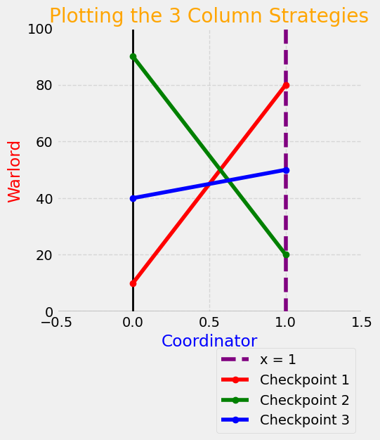

Graphical Method#
Two special cases of zero-sum matrix games can be handled using a visual display:
\(n \times 2\)
\(2\times n\)
We will employ the graphical method to solve these two cases.
## Do not change this cell, only execute it.
## This cell initializes Python so that pandas, numpy and scipy packages are ready to use.
import datascience
%matplotlib inline
import matplotlib.pyplot as plots
plots.style.use('fivethirtyeight')
import numpy as np
import scipy as sp
import math
import scipy.stats as stats
C:\Users\robbs\anaconda3\envs\GameTheory\Lib\site-packages\datascience\maps.py:13: UserWarning: pkg_resources is deprecated as an API. See https://setuptools.pypa.io/en/latest/pkg_resources.html. The pkg_resources package is slated for removal as early as 2025-11-30. Refrain from using this package or pin to Setuptools<81.
import pkg_resources
Blackhawk Down#
The primary example in this section relates to the backstory to the Blackhawk Down movie plot was a logistics standoff between international relief organizations trying to help prevent starvation due to a famine and warlords who were diverting the aid. If the warlords seized control of some of the donated supplies, they could profit by selling the supplies to the civilians who needed them. The situation oocurs often, sadly, and forms the basis for our game in this lesson.
Example#
Imagine a logistics coordinator for a relief agency and a Local Warlord in a fictional region. The Coordinator must choose one of two routes to deliver supplies, while the Warlord can choose from three different locations to set up a checkpoint to tax or seize the goods. This is a zero-sum game: any supplies seized by the Warlord are a direct loss to the Coordinator.
The Payoff Matrix#
The outcomes in the game matrix represent the Coordinator’s gains. The Coordinator (Row Player) has two strategies: Route A and Route B. The Warlord (Column Player) has three strategies: Checkpoint 1, 2, or 3. The payoffs to the players represent the percentage of the total supplies that reach their destination successfully.
With no dominance available to simplify the game, we graph the \(3\) column strategies to determine what the Row Player should do. Using the method of graphing a line through 2 points, we display three lines representing the outcomes of all three column strategies. Recall:
The row player is maximizing, and
The column player in minimizing.
The key point in the graph below is that the coordinator will play along the upper envelope in an attempt to maximize the outcomes.
plots.figure(figsize=(5,5))
plots.axhline(0, color='black', linewidth=1)
plots.axvline(0, color='black', linewidth=2)
plots.xlim(-0.5, 1.5); plots.ylim(-0.5, 100)
plots.axvline(x=1, color='purple', linestyle='--', label='x = 1')
points1 = ((0, 10), (1, 80))
plots.plot(*zip(*points1), marker='o', color='red', label='Checkpoint 1')
points2 = ((0, 90), (1, 20))
plots.plot(*zip(*points2), marker='o', color='green', label='Checkpoint 2')
points3 = ((0, 40), (1, 50))
plots.plot(*zip(*points3), marker='o', color='blue', label='Checkpoint 3')
# Add labels and title
plots.xlabel('Coordinator', color='blue')
plots.ylabel('Warlord', color='red')
plots.title('Plotting the 3 Column Strategies', color='orange')
# Add a grid, add legend, and place legend below figure.
plots.grid(True, linestyle='--', alpha=0.7)
plots.legend(loc='upper right', bbox_to_anchor=(1, -0.1),framealpha=0.75)
plots.show()

What the Graphics Mean#
Consider that the row player is choosing the value of \(x\) which is the proportion of times, in repeated play, that he or she will choose Route A. Thus, the coordinator (row player) will play the optimal strategy set:
\(x\) : proportion of times choosing A
\(1-x\) : proportion of times choosing B
We have two vertical lines in the graphic above:
\(x=0\) : where coordinator chooses to play \(0\%\) A
\(x=1\) : where coordinator choose to play \(100\%\) A
For the column player, the value at \(x=0\) is the outcome in Row B, while the value at \(x=1\) is the outcome in Row A. Hence, the row player hopes to maximize which will only happen if he or she can play along the upper envelope shown above.
Optimal Strategy#
The row player optimizes by finding the intersection of the green and red lines above. The \(x\)-coordinate of the intersection represents the equilibrium value for proprotion of times to play strategy A, and the \(y\)-value is the game’s equilibrium value.
Equations of the Lines#
The graph essentially shows the \(y\)-intercept with the slope easily calculated since the “change in x” (or denominator) is equal to \(1\). The warlord (column player) will choose to play the red and green strategies.
Red Line
\[y = 70x+10\]Green Line
\[y=-70x+90\]
The slope of the red line is \(70\) units, and its intercept is \(10\). The slope of the green line is \(-70\) with an intercept of \(90\). When we set the \(y\)-values equal and solve, we find:
This indicates that the coordinator’s (row player’s) optimal strategy set is given by:
Game Value#
The value of the game is the \(y\) coordinate of the intersection point which can be found by plugging \(x=\frac{4}{7}\) into either the red or green equation:
Optimal Strategy Set for the Other Player#
The graphical method shows only player’s optimal strategy set. How do we find the other? We use
after identifying the correct \(2\times 2\) matrix subgame to solve. The graphical method not only provides us with this knowledge, we can solve for one player’s optimal strategy set and the game value. Thus, the graphical method also confirms that the answer at which we arrive using oddments is correct.
Square Matrix Solution Principal
In an \(m\times n\) zero-sum matrix game, the solution will be a sqaure matrix subgame where both players have the same number of active strategies. For example, if the strategy is an MSS, the solution to a \(3\times 4\) matrix game will be either a \(3\times 3\) or a \(2\times 2\) matrix subgame.
By the square matrix solution principal and a quick check of the graph above, we can see the correct subgame to solve is the following:
The blue line in the graph represented the Checkpoint 3 strategy which, while not dominated by either red or green, still is outclassed by a combination of the two.
Warning
Reduction Issues
The above example shows a situation where the game reduces, but the game does not reduce by dominance.
Overall Solution#
The row oddments are \(60\) and \(80\) which gives the optimal strategy set
which, happily, aggrees with our work above.
For the column player, the oddments are \(70\) and \(70\). Hence, the warlord (column player) will play:
A quick glance at the original matrix knowing the warlord’s optimal strategies indicates the